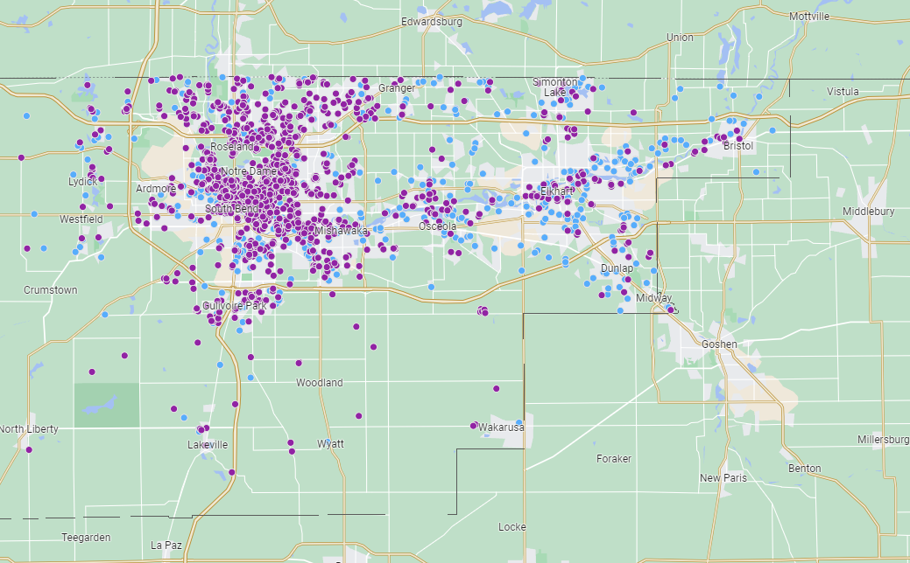

This dashboard was created by CommunityScale for the City of Greenfield. The objective of this dashboard is to outline the plan's objectives and priorities, share key observations and findings about the local housing landscape, and highlight recommended strategies to increase housing production and address affordability challenges.
 Housing glossary
Housing glossaryThe following glossary defines typical housing market and policy terms to help ensure the community is speaking in common terms about the issues, challenges, opportunites, and strategies pertaining to this housing study and across the housing discourse in general.
An Accessory Dwelling Unit (ADU) is a secondary residential unit located on the same lot as a primary dwelling. It provides additional housing and can be a converted garage, basement apartment, or separate building, potentially adding affordable housing options in established residential areas.
| Income level | Description |
|---|---|
| Below 30% AMI | Extremely low income |
| 30-60% AMI | Very low income |
| 60-80% AMI | Low income |
| 80-100% AMI | Moderate income |
| 100-120% AMI | Moderate income |
| Above 120% AMI | Upper income |
Area Median Income (AMI) is the midpoint of a region's income distribution, meaning half the households earn more and half earn less. It is established for each community by HUD and used to determine eligibility for affordable housing programs and to set income limits for housing assistance in a specific geographic area. "Low-income" housing is typically affordable to households earning below 80% AMI. "Middle-income" refers to 80-120% AMI.

A Community Land Trust (CLT) is a nonprofit organization that acquires and manages land to provide long-term affordable housing. It separates land ownership from building ownership, ensuring housing remains affordable for future generations by controlling resale prices and prioritizing community stewardship and stability.
Pictured at left is a South Bend house developed on land trust property by the Northeast Neighborhood Revitalization Organization (NNRO) which sold for 20% of its appraised value to an approved low-income buyer. Source

Cost burden occurs when a household spends more than 30% of its income on housing-related expenses, including rent or mortgage, utilities, and maintenance. This situation often leads to financial strain, making it difficult to afford other necessities such as food, healthcare, and transportation.
"Moderate cost burden" refers to a household spending 30-50% of its income on housing. "Severe cost burden" refers to a household spending more than 50% of its income on housing.
Too expensive to qualify for most subsidies but not expensive enough to justify market-rate development, middle-cost housing sometimes falls through the cracks and is under-produced. As a result, people earning around the median income often have few options that meet their budget and housing preferences, forcing them to either pay beyond their means or compete for lower-cost units intended for low-income households.

A short-term rental is a furnished living space rented out for brief periods, typically less than 30 days. Commonly found on platforms like Airbnb and VRBO, these rentals provide temporary lodging for travelers, vacationers, or business visitors, offering an alternative to traditional hotels and long-term leases. However, in some communities, these rental properties can effectively remove units from the local housing inventory, creating competition between rental property investors and households looking for long-term housing. The map at left indicates current short term rentals across the South Bend and Elkhart area.(Image: AirDNA)

Subsidized housing is government-supported housing where low-income tenants pay reduced rent. The difference between tenant payments and market rent is covered by government subsidies. This housing aims to provide affordable living options for individuals and families who cannot afford market-rate housing.
CommunityScale is a pioneering urban planning and spatial data analysis company serving clients across the United States.
Follow CommunityScale on LinkedIn and Twitter/X. This dashboard is open source MIT license - 2024 CommunityScale